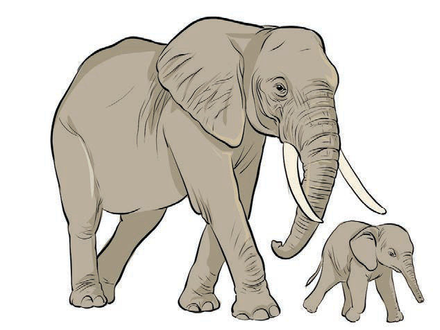

ABQuestions
1. What things are in the picture?
2. What is the size of animal A compared to animal B?
3. What is the size of animal B compared to animal A?
4. What is the opposite of the word small?
5. What is the opposite of the words huge, large, and big?
6. What is the technical term for words that mean the opposite?